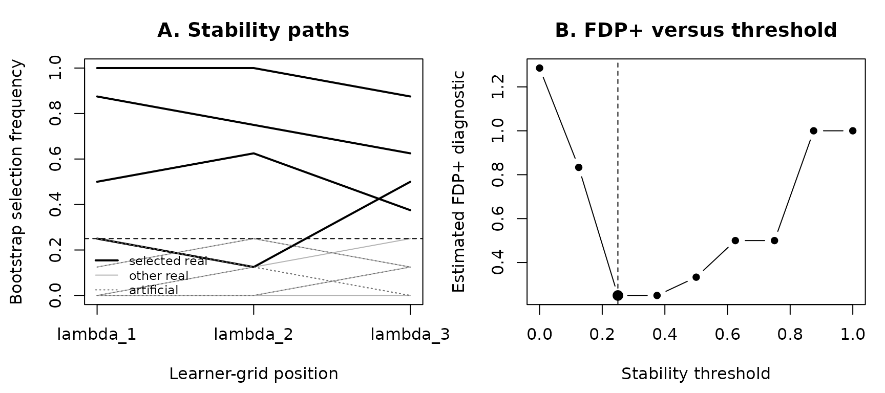

Reading stability paths and FDP+ plots
Source:vignettes/stablr-reading-plots.Rmd
stablr-reading-plots.RmdThe two questions the plots answer
- Stability path: How frequently did a feature enter the learner’s selected set under resampling and across the tuning grid?
- FDP+ curve: At what selection-frequency threshold does the decoy-based STABL diagnostic attain its minimum?
Neither plot demonstrates biological causality, validated predictive accuracy, or guaranteed control of realized FDR. In STABL, the quantity minimized is a data-dependent FDP+ diagnostic, and its interpretation depends on the procedure and assumptions (Hédou et al., 2024).
An annotated, frozen Python reference example
This short illustration uses the same immutable Python fixtures as
vignette("stablr-python-parity").
fixture_dir <- system.file("extdata", "python_parity_vignette", package = "stablr")
stopifnot(nzchar(fixture_dir))
scores <- read.csv(file.path(fixture_dir, "stability_scores.csv"),
stringsAsFactors = FALSE)
curve <- read.csv(file.path(fixture_dir, "fdp_plus_curve.csv"))
reference <- read.csv(file.path(fixture_dir, "stabl_fit_reference.csv"))
to_scores <- function(data, kind) {
sub <- data[data$feature_type == kind, , drop = FALSE]
m <- matrix(NA_real_, length(unique(sub$feature)),
length(unique(sub$lambda_id)),
dimnames = list(unique(sub$feature), unique(sub$lambda_id)))
for (i in seq_len(nrow(sub)))
m[sub$feature[i], sub$lambda_id[i]] <- sub$stability_score[i]
stopifnot(!anyNA(m))
m
}
real <- to_scores(scores, "real")
art <- to_scores(scores, "artificial")
chosen <- curve$threshold[which(curve$is_first_minimum == 1L)]
selected <- apply(real, 1L, max) > chosen
stopifnot(length(chosen) == 1L,
identical(as.integer(selected[reference$feature]), reference$selected))
op <- par(mfrow = c(1, 2), mar = c(4.5, 4.3, 3, 1))
matplot(seq_len(ncol(real)), t(real), type = "l", lty = 1,
col = "gray70", ylim = c(0, 1), xaxt = "n",
xlab = "Learner-grid position", ylab = "Bootstrap selection frequency",
main = "A. Stability paths")
axis(1, at = seq_len(ncol(real)), labels = colnames(real))
abline(h = chosen, lty = 2)
for (i in which(selected)) lines(seq_len(ncol(real)), real[i, ], lwd = 2)
matlines(seq_len(ncol(art)), t(art), lty = 3, col = "gray45")
legend("bottomleft", c("selected real", "other real", "artificial"),
lty = c(1, 1, 3), lwd = c(2, 1, 1),
col = c("black", "gray70", "gray45"), bty = "n", cex = 0.75)
plot(curve$threshold, curve$fdp_plus, type = "b", pch = 16,
xlab = "Stability threshold", ylab = "Estimated FDP+ diagnostic",
main = "B. FDP+ versus threshold")
abline(v = chosen, lty = 2)
points(chosen, min(curve$fdp_plus), pch = 19, cex = 1.3)
par(op)Read panel A: stability path
- Y axis: a score of 0.8 means the feature entered the selected set in approximately 80% of resamples at that grid point; it does not mean 80% probability of biological importance.
-
X axis: regularization/threshold settings, not time
and not another sample. Confirm whether increasing x is more or less
penalized. Some learner grids are not directly comparable; this fixture
shows only
lambda_1–lambda_3positions. - Lines: darker, thicker real lines passed the maximum-over-grid score threshold in this fixture; dotted lines are artificial controls. Selection is based on each feature’s maximum across grid positions, not necessarily its frequency at every position.
- Watch for: high artificial lines, real-and-decoy saturation, unstable peaks at a single grid edge, and correlated features alternating in selection.
Read panel B: FDP+ curve
- X axis: candidate stability-frequency cut-off, not the learner’s lambda. This is a different tuning axis from panel A.
- Y axis: an artificial-feature-based FDP+ estimate at each cut-off. Values above 1 are possible; do not read it as a probability or as the realized FDP.
-
Chosen rule: the dashed line marks the
first minimum. Here the minimum is
0.25 and ties with 0.375; the recorded Python rule
chooses 0.25. Applying strict
>excludesgene_e(score exactly 0.25) and includesgene_d(score 0.5). -
Watch for: an extremely flat minimum, few
artificial features, low real/artificial separation, saturation, and
apparent selection despite null-like scores. The plotted minimum does
not automatically provide nominal FDR control. A manually fixed
hard_thresholdoverrides the FDP+-selected threshold in actual fitted-object support selection; never assume the minimum is the operative cutoff without checking fit settings.
Three interpretation mistakes to avoid
- A flat/high stability curve does not prove a biological signal, particularly when artificial features are equally stable.
- A low minimum FDP+ does not mean that fraction of the reported features is known to be false, nor that population-level FDR is controlled at that fraction.
- Training-set stability and decoy accounting do not replace leakage-safe, study-disjoint or external predictive evaluation.
For the reference replay, see
vignette("stablr-python-parity"). For the methodological
distinction, see Hédou J et al. Discovery of sparse, reliable omic
biomarkers with Stabl. Nature Biotechnology (2024). DOI:
https://doi.org/10.1038/s41587-023-02033-x.